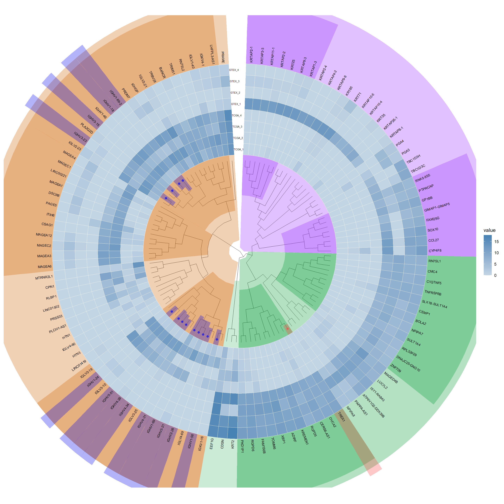
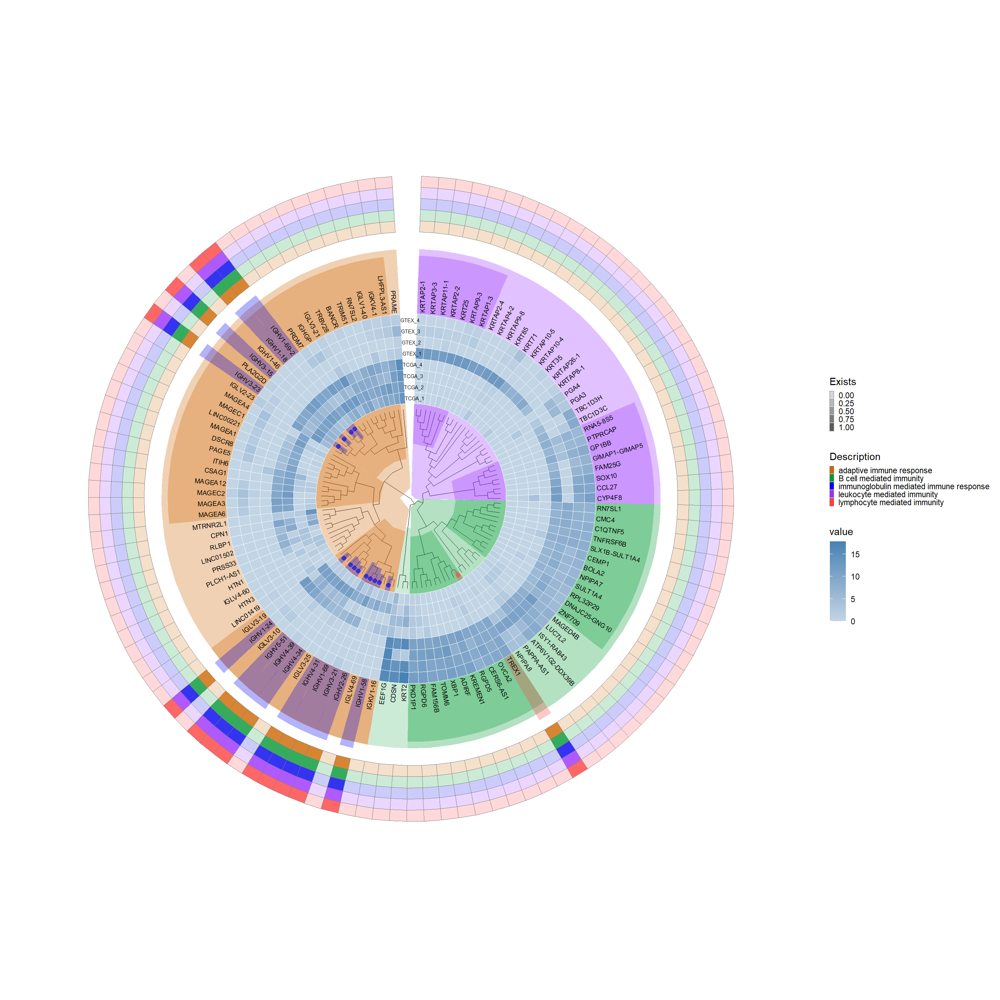

This image showcases an integrated scientific visualization, centralizing a circular phylogenetic tree with annotated nodes, surrounded by associated heatmaps and bar charts that represent gene expression data and functional pathway enrichments.
tumor <-readRDS("../test_TransProR/generated_data1/removebatch_SKCM_Skin_TCGA_exp_tumor.rds")normal <-readRDS('../test_TransProR/generated_data1/removebatch_SKCM_Skin_Normal_TCGA_GTEX_count.rds')# Merge the datasets, ensuring both have genes as row namesall_count_exp <-merge(tumor, normal, by ="row.names")all_count_exp <- tibble::column_to_rownames(all_count_exp, var ="Row.names") # Set the row names# Drawing dataall_count_exp <-log_transform(all_count_exp)
# Convert from SYMBOL to ENTREZID for convenient enrichment analysis later. It's crucial to do this now as a direct conversion may result in a reduced set of genes due to non-one-to-one correspondence.# DEG_deseq2# Retrieve gene listgene <-rownames(DEG_deseq2)# Perform conversiongene =bitr(gene, fromType="SYMBOL", toType="ENTREZID", OrgDb="org.Hs.eg.db")
'select()' returned 1:many mapping between keys and columns
Warning in bitr(gene, fromType = "SYMBOL", toType = "ENTREZID", OrgDb =
"org.Hs.eg.db"): 43.37% of input gene IDs are fail to map...
# Remove duplicates and mergegene <- dplyr::distinct(gene, SYMBOL, .keep_all=TRUE)# Extract the SYMBOL column as a vector from the first datasetsymbols_vector <- gene$SYMBOL# Use the SYMBOL column to filter corresponding rows from the second dataset by row namesDEG_deseq2 <- DEG_deseq2[rownames(DEG_deseq2) %in% symbols_vector, ]head(DEG_deseq2, 5)
Diff_deseq2 <-filter_diff_genes( DEG_deseq2, p_val_col ="pvalue", log_fc_col ="log2FoldChange",p_val_threshold =0.01, log_fc_threshold =9.1 )# First, obtain a list of gene names from the row names of the first datasetgene_names <-rownames(Diff_deseq2)# Find the matching rows in the second dataframematched_rows <- all_count_exp[gene_names, ]# Calculate the mean for each rowaverages <-rowMeans(matched_rows, na.rm =TRUE)# Append the averages as a new column to the first dataframeDiff_deseq2$average <- averagesDiff_deseq2$ID <-rownames(Diff_deseq2)Diff_deseq2$changetype <-ifelse(Diff_deseq2$change =='up', 1, -1)# Define a small threshold valuesmall_value <- .Machine$double.xmin# Before calculating -log10, replace zeroes with the small threshold value and assign it to a new columnDiff_deseq2$log_pvalue <-ifelse(Diff_deseq2$pvalue ==0, -log10(small_value), -log10(Diff_deseq2$pvalue))# Extract the expression data corresponding to the differentially expressed genesheatdata_deseq2 <- all_count_exp[rownames(Diff_deseq2), ]#head(heatdata_deseq2, 1)
# Examine node points, note the x-coordinate in this df (tree_data)# Convert data generated by ggtree into a dataframetree_data <-as.data.frame(p1$data)p2 <-rotate_tree(p1, 90)
Coordinate system already present. Adding new coordinate system, which will
replace the existing one.
kegg.out.outdata_deseq2 <-as.data.frame(kegg.out_deseq2)# Uncomment to export the data, which are in ENTREZID format# write.csv(kegg.out.outdata_deseq2, "E:/kegg.out.outdata.csv")##### Convert numeric Entrez gene IDs or Ensembl gene IDs from above code to symbolslibrary(org.Hs.eg.db)kegg.out1_deseq2 =as.data.frame(kegg.out_deseq2)ENTREZID =strsplit(kegg.out1_deseq2$geneID, "/")symbol =sapply(ENTREZID, function(x) { y =bitr(x, fromType ="ENTREZID", toType ="SYMBOL", OrgDb ="org.Hs.eg.db")# In case of multiple matches, take the first one y = y[!duplicated(y$ENTREZID), -1] y =paste(y, collapse ="/")})kegg.out1_deseq2$geneID = symbolkegg.out1.outdata_deseq2 <-as.data.frame(kegg.out1_deseq2)# Uncomment to export the converted data# write.csv(kegg.out1.outdata_deseq2, "E:/fruit/kegg.out1.outdata.csv")head(kegg.out.outdata_deseq2, 5)
# List of selected pathway namesselected_pathways_names <-c("immunoglobulin production", "production of molecular mediator of immune response")# Use functionresult_names_deseq2 <-pathway_description(GO_deseq2, selected_pathways_names, erich.go.BP.outdata_deseq2)# View the resultshead(result_names_deseq2, 5)
Symble Description Exists
1 ADIRF immunoglobulin production 0
2 ATP6V1G2-DDX39B immunoglobulin production 0
3 BANCR immunoglobulin production 0
4 BOLA2 immunoglobulin production 0
5 C1QTNF5 immunoglobulin production 0
8.7.9 Label highly and lowly expressed genes and annotate corresponding colors
selected_genes_deseq2 <- result_threshold_deseq2 %>% dplyr::filter(Exists ==1) %>% dplyr::select(Symble) %>% dplyr::distinct()# Invoke the functionresult_deseq2 <-gene_color(selected_genes_deseq2, Diff_deseq2, "#0000EE", "#fc4746")# Add gene highlights to the plotadd_gene_highlights_p3 <-highlight_genes(p2, result_deseq2, hilight_extend =26)add_gene_highlights_p3
Scale for fill is already present.
Adding another scale for fill, which will replace the existing scale.
p4

8.7.11 ggtreeExtra::geom_fruit
## Shorten a name that was too longresult_threshold_deseq2$Description <-gsub("adaptive immune response based on somatic recombination of immune receptors built from immunoglobulin superfamily domains","adaptive immune response", result_threshold_deseq2$Description)# Enhance the visualization with additional scale and elementsp7 <- p4 +new_scale_fill() +geom_fruit(data = result_threshold_deseq2, geom = geom_tile,mapping =aes(y = Symble, x = Description, alpha = Exists, fill = Description),color ="grey50", pwidth =0.5, offset =1.02, size =0.02) +scale_alpha_continuous(range =c(0.2, 0.8),guide =guide_legend(keywidth =0.3, keyheight =0.3, order =2)) +scale_fill_manual(values =c("#CD6600", "#009933", "#0000EE", "#9B30FF", "#FF4040"), guide =guide_legend(keywidth =0.3, keyheight =0.3, order =2))p7

8.7.12 Bar plot section
# offset: Adjust the spacing between each barp8 <- p7 +new_scale_fill() +geom_fruit(data = Diff_deseq2, geom = geom_bar, mapping =aes(y = ID, x = log_pvalue, fill ="log_pvalue"), pwidth =0.3, offset =0.1, orientation ="y", stat ="identity") +geom_fruit(data = Diff_deseq2, geom = geom_bar, mapping =aes(y = ID, x = log2FoldChange, fill ="log2FoldChange"), pwidth =0.3, offset =0.2, orientation ="y", stat ="identity") +geom_fruit(data = Diff_deseq2, geom = geom_bar, mapping =aes(y = ID, x = average, fill ="average"), pwidth =0.3, offset =0.04, orientation ="y", stat ="identity") +scale_fill_manual(values =c("log_pvalue"="#87CEFA", "log2FoldChange"="#FFC125", "average"="#7B68EE"))p8